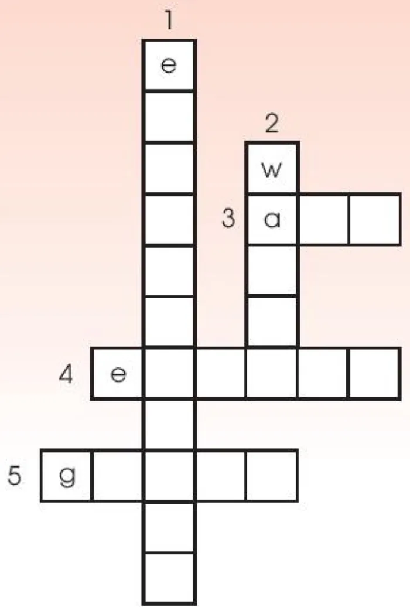

Reading & writing
Lesson 3 — Skills 2
R1Six stops in 45 minutes
Check-up
Your favourite singer
4 minWords
Before reading
6 minReading
Collect water
15 minWriting
Living green
12 minBrain Brawl
Units 1–3
6 minWrap-up
Homework
2 min
By the end of this lesson…
- read for general and specific information about how to live a green life
- write a short paragraph about ways of living green.
Check-up
Your favourite singer or musician
4 minutesTalk about your favourite singer or musician
- name
- famous song / work
- awards
Before reading
Six words
6 minutesessential
- essential (adj) /ɪˈsenʃl/ thiết yếu
Water is essential for life.
rainwater
- rainwater (n) /ˈreɪnwɔːtə(r)/ nước mưa
We collect rainwater for later use.
store
- store (v) /stɔː(r)/ lưu trữ, dự trữ
People store rainwater in large tanks.
container
- container (n) /kənˈteɪnə(r)/ thùng chứa
The water flows into a container.
roof
- roof (n) /ruːf/ mái nhà
Rainwater is collected from a roof.
dry
- dry (adj) /draɪ/ khô, khô hạn
The device works even in dry conditions.
Reading
Collect water to live a green life
15 minutesRead and complete the crossword
Read the text below. Then work in pairs to complete the crossword with five words from the text.
Collect water to live a green life
Water is essential for life. Therefore, the methods of collecting water are important for meeting its growing need.
Collect water to live a green life
The traditional method involves collecting rainwater and storing it for later use. Rainwater is collected from a roof and sent to a container. Collected rainwater is an excellent source of water for people, animals, and plants.
Collect water to live a green life
There is also a new method of collecting water. It can turn the tiny drops of water in the air into drinking water. Air-to-water technology creates water from air and releases it all the time. It uses the sun's energy and works well even in dry conditions.
Collect water to live a green life
In general, collecting rainwater or creating water from air will allow people to save natural resources, improve the environment, and live a green life.
Across · 3–4

ACROSS 3. the mixture of gases surrounding the earth that we breathe air
ACROSS 4. a source of power that can be used to provide light and heat, or drive machines energy
Across · 5
ACROSS 5. a way of living that is good for the environment green
Down · 1–2
DOWN 1. the natural world in which people, animals, and plants live environment
DOWN 2. a liquid without colour or smell that falls as rain and is used for drinking, washing, etc. water
Give short answers
Read the text again and give short answers to the following questions.
Read the text again
1. What's important for meeting the growing need for water? The methods of collecting water (are).
Read the text again
2. What's the traditional method of collecting rainwater? Rainwater is collected from a roof and sent to a container.
Read the text again
3. What's the new method of creating water? Tiny drops of water in the air are turned into drinking water.
Writing
Living green
12 minutesComplete the paragraph
Think about ways of living a green lifestyle. Complete the paragraph. Use what you have learnt and the ideas below to help you.
Living green
- planting more trees and plants
- organising regular clean-up activities
- collecting litter, setting up more recycling bins
Living green
- turning off electrical devices when not in use
- using energy from the sun, wind, and water.
Make your life greener
There are many ways you can make your life greener.
______ ______ ______
Living a green lifestyle is not difficult, but these small changes will make a big difference.
Living green
There are many ways you can make your life greener. First, make your area green by planting more trees and plants. Second, make your area clean by organising regular clean-up activities, collecting litter and setting up more recycling bins.
Living green
Finally, turn off electrical devices when not in use and use energy from the sun, wind and water. Living a green lifestyle is not difficult, but these small changes will make a big difference.
Brain Brawl
Four teams · five topics · 20 questions
6 minutesWrap-up
Homework
2 minutesFinish Review 1
- finish the "Living green" paragraph
- workbook Review 1
- prepare Unit 4.